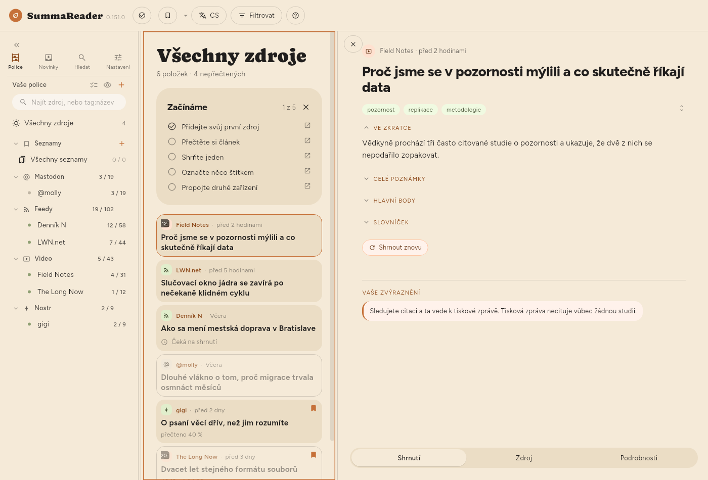

Čtení
Klikněte na článek nebo stiskněte ↵. Podle okna a rozvržení zvoleného v Nastavení › Základní › Navigace › Panely a police › Rozvržení se otevře vedle seznamu, nad ním nebo pod ním, nebo zabere celé okno. V telefonu zabere vždy celou obrazovku.

Tři karty
- Shrnutí — co napsal model, ve třech sbalitelných oddílech: Ve zkratce (tři věty), Hlavní body (jeden na každé téma, každý s nadpisem a několika větami vysvětlení) a Slovníček (pojmy, které model považoval za vhodné vysvětlit). Body z videa nesou časové značky, které přeskočí na dané místo.
Shift+1–3je sbalí. - Zdroj — samotný článek, nebo přepis.
- Podrobnosti — odkud článek přišel, kdy, který model ho shrnul a kolik to stálo.
1–3 mezi nimi přepínají.
Shrnutí napsaná dřív, než o ně tato aplikace přestala žádat, obsahují i Celé poznámky, delší souvislý text. Nic je už nevytváří: jejich účel převzal přehled a vysvětlení u každého tématu.
Panel nástrojů
- Uložit — zařadí článek do seznamu, který je v polici vyplněný, a to je Uložené, dokud nezvolíte jiný. ▾ vedle tlačítka, pravé kliknutí nebo podržení vybere jiný seznam nebo vytvoří nový.
- Označit přečtené — u článků z kanálu. Se zapnutým filtrem nepřečtených vás to přesune na další článek; po posledním se čtečka zavře.
- Smazat — jen u článků, které jste si uchovali. Ptá se dvakrát a druhé stisknutí říká Smazat všude?, protože článek odstraní ze všech zařízení, se kterými synchronizujete, a žádný kanál ho už nepřinese zpět.
Pohyb mezi články
Táhněte článek do strany, nebo použijte j / k, nebo mezerník na konci článku. Tažení doprava u prvního článku vás vrátí na seznam. Na telefonu nebo v úzkém okně vás přetažení od levého okraje vrátí na seznam a přetažení od pravého okraje otevře webovou stránku. Přetažení za konec nebo za začátek článku nedělá nic, dokud mu nevyberete akci.
Přetažení provede akci, až pustíte prst. Když je přetažení dost dlouhé, krátká nápověda ukáže akci. Když se před puštěním vrátíte, nestane se nic. Další článek se pak vysune zdola a předchozí shora. Stejně se článek posune s j a k. Na dotykové obrazovce se při přetažení k dalšímu nebo předchozímu článku tento článek vsouvá spolu s prstem. Když je přetažení dost dlouhé, ukáže se nad ním nápověda, a když prst pustíte příliš brzy, článek se vrátí zpět.
U posledního článku v seznamu ho tažení do strany nebo přetažení k dalšímu článku označí jako přečtený a vrátí vás na seznam. Zpráva řekne, že to byl poslední článek, a při přetažení to říká i nápověda. U posledního článku stránky obojí otevře první článek další stránky.
Jak daleko musíte táhnout, než puštění provede akci, nastavíte volbou Krátká, Střední nebo Dlouhá v Nastavení › Základní › Navigace › Gesta › Délka přetažení. Jsou to třetina, polovina a tři čtvrtiny výšky článku. Výchozí je Dlouhá. Rychlé švihnutí provede akci na jakoukoli vzdálenost.
Každému z těchto šesti gest můžete dát jinou akci, například Označit přečtené / nepřečtené nebo Označit přečtené a otevřít další. Vyberete je v Nastavení › Základní › Navigace › Gesta › Gesta v článku. Přejetí položky seznamu je v Nastavení › Základní › Navigace › Gesta.
V telefonu nebo tabletu stáhněte seznam dolů, abyste ho obnovili nebo zkontrolovali zdroje. Aplikace se zeptá: Obnovit seznam nebo Zkontrolovat nové články. Chcete-li jedno z nich bez otázky, vyberte ho v Nastavení › Základní › Navigace › Gesta › Stažení seznamu dolů.
Posouvání
Kliknutí myší předá klávesy panelu, na který kliknete. Kliknutí na článek v seznamu ho otevře a nechá klávesy v seznamu, takže ↓ a ↑ pokračují v procházení od tohoto článku. Chcete-li článek posouvat klávesami, klikněte do článku. Klepnutí prstem nemění, který panel má klávesy.
Když je článek aktivní, posunou jej klávesy ↓ a ↑ o několik řádků textu, stejně jako jeden dílek kolečka myši nad ním. Kolik řádků, určuje Nastavení › Základní › Navigace › Posouvání › Posunout o: 1, 2, 3, 5 nebo 8, na začátku 3. Krok se řídí velikostí písma a řádkováním, takže zůstává stejný počet řádků při jakémkoli nastavení. Touchpad si ponechává svůj vlastní jemný pohyb.
Page Down a Page Up posunou o devět desetin obrazovky, takže poslední přečtené řádky zůstanou nahoře na další obrazovce. Home a End přejdou na začátek a na konec. Tyto čtyři klávesy se na koncích článku zastaví a dál nejdou.
Mezerník je klávesa, která jde dál. Posune o stránku dolů, a když je článek už na konci, otevře další článek, který se vsune zdola stejně jako při j. Shift+mezerník posune o stránku nahoru a od začátku článku otevře předchozí. Článek, který se vejde do okna, otočí už první mezerník. Držení klávesy neotočí víc než jeden článek.
Tab a Shift+Tab přecházejí mezi policí, seznamem a článkem, stejně jako → a ←. U prvního a posledního panelu se zastaví, místo aby šly dokola, a když okno ukazuje jediný panel, nedělají nic. Od této verze ← a → už neprocházejí seznam ani neotvírají předchozí a další článek a už nesbalují ani nerozbalují skupinu v polici: skupinu tam sbalí ↵ a vyfiltruje ⇧↵. Tažení do strany článek dál otáčí.
Tyto posuny klouzají na nové místo, místo aby skočily. Nastavení › Základní › Navigace › Posouvání › Plynulé posouvání to vypne. Vypnuté je také tehdy, když systém žádá omezení pohybu.
Nový článek se na místo vysune: na telefonu ze strany a při procházení seznamu shora či zdola. Aby se objevil hned, vypněte Nastavení › Základní › Navigace › Posouvání › Vsouvat články.
Když chybí text
Ne každý článek přijde i se svým textem. Čtečka řekne, o který případ jde:
| Říká | Co se stalo |
|---|---|
| Toto video nemá titulky | Není co číst, přepis neexistuje |
| YouTube požádal aplikaci o zpomalení | YouTube zatím titulky odmítl. V Linuxu je aplikace nejdřív zkusí získat ze stránky videa ve svém skrytém vykreslovači stránek, z jeho přehrávače nebo z panelu Zobrazit přepis |
| Stránka dorazila, ale článek v ní nebyl | Stránka skládá text až v prohlížeči |
| Web poslal kontrolu proti robotům | Stránka „dokažte, že jste člověk“ |
| Za předplatným | Místo článku přišla nabídka |
| Stránka už neexistuje | Stažena nebo přesunuta |
| Není v tomto zařízení | Má ho jiné zařízení, nebo ho nikdo nestáhl |
Případ se zpomalením zkoušejí další kontroly samy znovu, několikrát. Z ostatních má smysl zkusit znovu jen poslední, a to udělá Získat text.
Když kontroly přestanou zkoušet, zvonek ukáže „Články ze zdroje <zdroj>, které nešlo přečíst: N“. Získat text na tom řádku zkusí všechny znovu v jednom běhu a Zastavit ve stavovém pruhu ho ukončí.